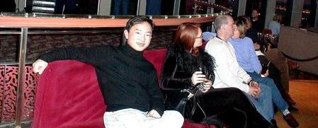
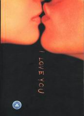

Archives : 2002-11
寂寞咖啡之《挪威的森林》 @ Nov 30, 2002
到家了,马上打开电脑想书写自己的情绪.
晚上我们部门在向阳渔港聚餐,四桌。上次聚餐是9月13日的晚上，一晃眼，日子就这么过去了两个多月。美国分公司的S总也在场。敬酒时，老张让我问S总很久前我问她的那个问题：人为什么要结婚？S总回答我：“因为当时被骗了，所以才结婚的。”大家一笑了之。S总似乎见了我没有别的话题，只是问：“什么时候给他吃糖？...要用快件寄到美国去。”
我以为结婚不仅仅意味着想象的停顿，也是不现实的。我没有想把我的生活和某个男人连在一起，在我28岁前。我只是希望在荒芜的海滩上保留一个幻想。正如梦幻是人生不可或缺的，必然的。
这个晚上我喝了太多的红酒，据说第一扎葡萄酒的价格是3500元，大家畅谈举杯间笑谈洒落一滴酒可是10元钱时，我却挣扎在喝还是不喝的抉择上。最终我选择多喝几杯，虽然酒喝多了会喝出黄疸，但酒令人畅快，现在的日子太古板了！我不认为我现在的行为是自然的，我以为我不过是对于新奇的迷恋和崇拜，自由和堕落的过程必然伴随着极大的欢乐，空虚和痛苦仅仅发生在结束的时刻。我可能会在开始的时候疑惑，以我们的沉郁的背景，生命之“轻”的状态是否真的使我们快乐？
我从来没有喜欢过一般观念上的美男子，但是当赋予个性的容貌与某种精神叠印在一起的时候，会令我怦然心动。我仅仅会因为对方坦荡且孩子气的眼睛，以及眸子里闪烁着某种令我难以拒绝的光芒而一见钟情！对于我，激情是发生的。激情的发生突如其来，没有先兆，短暂而深刻，痛苦与欢乐同时发生，深入到身体和心灵的极处。
我的行为先于我的思想。为爱情而陶醉的时候，我就已经怀着怅然与快意，想到将来的分离。无法预设的，只是它的突兀而尴尬的结局。我觉得心被无端地刺了一刀，一个自重的人应该懂得尊重别人，包括尊重别人的选择。我感觉到内心无助的悲哀和孤寂，广漠无际，弥漫于人生。
悠长的巷子使我寂寞，如潮的寂寞，我知道这就是结局。

——羽泉的歌：《开往春天的地铁》
这个冬天 最后一夜
我和你都在追赶开往春天的地铁
那里曾是我的世界
想等到一生一世
等开往春天的地铁
我不怕庸人？和代价
只是我担心
自己承担不了对你的牵挂......
在跳舞中遗忘...... @ Nov 30, 2002
初恋 @ Nov 29, 2002
六八年前后，文革仍在持续，但是那些红卫兵、造反派已经把精力转向争权夺利，互相攻击，甚至开始的武斗上去了。我们属于黑五类子女，自然不能参与那些令人羡慕的活动，但也无人理睬，生活显得轻松、无聊。
同学小龙的父亲是个右派，好像是江浙一带的人，他四十年代从延安派到这里的共产党地下武装“边纵”中任政治部副主任，与边纵副司令朱成为好友，朱文革前是省军区的副司令，文革也被打倒了。
朱的女儿这时来到方家玩，而我因贪读方家那满屋的书，经常在方家一呆就是半天。
朱家的女儿名叫缅生，据说是在缅甸出生的，比我们大八、九岁，她的外貌，身材现在一点也无法回忆出来了，但她的风采着实迷住了我。她可能出于无聊，在和我们几个小男孩子的交往中并无一丝应付的痕迹，她落落大方的谈吐和爽朗的笑声与小镇女孩扭扭捏捏相比给人既轻松又亲切的感觉，她似乎无所不知的见识象一扇打开的窗户，让我们领悟到外面的精彩。
对于我来说她如同天仙，是充满智慧的女神，而且荡漾着女性的魅力。
我那一两个月几乎天天都想出各式理由泡在方家，只图和她多在一起，而她确实没有露出一丝一毫的厌烦。
终于她走了，“我的世界开始下雪……”。
二十多年后，朱家的儿子海宁来到探讨在中国推销法国香水的时候，（他已经是法国公民，娶了个法国女人，生了两个杂种）我在朋友的饭桌上与其结识，随即上面的回忆闪出，我忍不住讲了这段经历，并说：“你姐姐是我少年时代的梦中情人”，这话一出，大家哈哈大笑，差点将饭喷出来。然而在我依然一本正经地重复：“这不是开玩笑”后，大家都沉默了，仿佛每个人都在追忆自己消逝的少年，那里有完全不带肉欲和物欲的情感。
1998年 posted（转自乌鸦嘴）
黑+白=灰？ @ Nov 28, 2002
早上看了WALLA的“再谈cheap chinese labour”，某些感受上有相同的地方。想起昨天和单证部经理争吵的事情。
平时我对她有种刻意的尊重和礼貌，即使她的反应常常是内分泌失调状。因每每向她询问工作上的事情都会莫名其妙地遭遇冷脸。但是昨天我实在忍无可忍，在单证部做结汇单据前，我特地将议付行的联系人名片钉在卷宗上，并嘱咐单证员交单到这家银行议付。结果此经理将全套单据交中行了，那也没什么大碍，可需要做福费庭时，我去向她询问这件事，我们不可避免地争吵起来：
她说：“你填单子啊！”
我问：“单子在哪儿？”
她：“可能在财务部。”
我问：“财务部找谁啊？”
她：“不知道...”
我马上火冒三丈：“你要求将单据送到中行议付，怎么没有人跟踪这件事？即使没有人跟踪，你也应该有义务宣传如何操作。”
她：“你干什么的，你自己怎么不来问呢？”
我：“那要你们国际结算部干什么？你在这里做什么呢？”
她：“你要交的那家银行和我没有关系，你要交单到那家银行你自己交，或者叫某某人帮你交。我不管。”
这更加使我不能忍受，什么人居然还在国际结算部做主要工作。我挂了电话直接拨给她的上司，我必须解决这件事情。到了下午，她派她部门的小女孩送了中行做福费庭业务的申请表给我，当我打电话给她时，明显态度有所转变。
我不懂她那句“那家银行和她没有关系”究竟是什么含义？要如何才能有关系呢？要怎样才能发生关系呢？要发生怎样的关系才叫“关系”呢？我之所以不愿意和中行有“关系”而愿意和外资银行有关系是因为在“服务”意识上存在根本的不同。但我不理解她所谓的“关系”究竟是基于什么样的因素？
我们办公室的人劝我，说她一贯那样，要我宽容更要我不要一般计较。有人说：“你看我知道她是那样的人，所以我都避免和她正面接触。”什么话？？？？我纳闷这样的人，将她个人的情绪带到工作中好象是正常的了，而受害者要是“计较”了，就是不宽容？！正是因为宽容的人多了，使她养成坏习惯，有可能是“顽症”了。
有时候，我有点分不清楚“黑”和“白”的颜色。
和老妈一起健身 @ Nov 25, 2002
这两天比较懈怠的状态，南京这里的天气也阴沉了好几天，就好象一个人不温不火的态度，不下雨也不出太阳，我穿着一件灰溜溜的西服穿梭在灰蒙蒙的城市里，阴霭的表情面对就要发霉了的城市。
在五台山健身会馆办的那张会员卡，充分利用在阳光明媚的7、8月份，9月下旬开始一直没有去健身，这么慵懒着晃悠悠地就到了11月下旬。期间倒是拿着卡去会馆从事桑拿芬兰浴什么的与健身无关的活动。昨天下午想着无论如何要去健身会馆，我体验到健身能带给人多少的愉悦。我问老妈是否和我一起去，她居然很愿意的笑起来，我也笑了。
我换了运动衣运动鞋，带妈妈在楼上楼下参观了一圈，地下室新增加了壁球室，可惜只有一间。当时没人在那里打球，到跳操房时已过了16：00踏板操的时间，里面的人正大汗淋漓地在教练的带领下兴奋的运动着。后来我去器械房锻炼了，器械是很枯燥的运动方式，所以那里人很少，在很少的人当中女人就更少了。一般我都会到器械房去练练胸肌、背肌、臀肌，还会使用特别的器械拉扯自己背部的脊椎，没有办法我平时不注意自己的姿态，有即将驼背的迹象。练完器械会到跑步机上放松一下。热身之后接着去游泳。
帮老妈在健身馆的销售部买了件泳衣，老妈的肚子虽然是大了点，可是腿还挺漂亮的，穿上在淡绿底色上覆盖着花案的泳衣，衬托老妈身上的皮肤更白。从小学的时候我就去游泳可是今年才学会，也是在健身会馆学会的。一是会馆的泳池干净，人少；二来在这里心里安全感大大提高，比如对于水的卫生对于周围人的信任等等；另外泳池边有两位教练一直坐阵。游泳应该是一件充满乐趣的活动，这里不仅给了我游泳的乐趣也令我体会到充分的享受。
妈妈说她30多年没有游泳了，不知道现在还行不行。下了泳池妈妈似乎年轻了10岁，活泼可爱的在水里适应，那种快乐的状态不禁让我自责，平时我根本就是忽略父母的快乐，没有主动想些方法让他们不那么寂寞。尤其是我的妈妈，没什么特别的兴趣爱好，一心只为她的孩子，对于她自己的个人生活世界却不懂计划和经营，因此她的情绪时常不那么稳定，她把她的快乐和幸福都寄托在她爱的人身上。她经常教育我们“女人要经济独立，要不断学习新的知识和新事物。”可是她却没有意识到要培养自己的兴趣爱好，不能将所有的感情都倾注在爱的人身上，那样会失去自我，那样也会使对方觉得很有压力。我想我应该以自己良好的状态给我所爱的人带来快乐，而不是期望于对方给自己带来什么。老妈回到家后马上打电话给我姐姐，告诉她今天下午我们有多开心...
这周我一定要帮老妈办张长期的会员卡。
Kids On Love @ Nov 24, 2002
Reflections On The Nature Of Love
“Love is the most important thing in the world, but baseball is pretty good too.”
-Greg, age 8
What Is The Proper Age To Get Married?
“Eighty-four! Because at that age, you don’t have to work anymore, and you can spend all your time loving each other in your bedroom.”
-Judy, age 8
“Once I’m done with kindergarten, I’m going to find me a wife!”
-Tom, age 5
What Do Most People Do On A Date?
“On the first date, they just tell each other lies, and that usually gets them interested enough to go for a second date.”
-Mike, age 10
When Is It Okay To Kiss Someone?
“You should never kiss a girl unless you have enough bucks to buy her a big ring and her own VCR, ‘cause she’ll want to have videos of the wedding.”
-Jim, age 10
“Never kiss in front of other people. It’s a big embarrassing thing if anybody sees you. But if nobody sees you, I might be willing to try it with a handsome boy, but just for a few hours.”
-Kally, age 9
The Great Debate: Is It Better To Be Single Or Married?
“It’s better for girls to be single but not for boys. Boys need somebody to clean up after them!”
-Lynette, age 9
“It gives me a headache to think about that stuff. I’m just a kid. I don’t need that kind of trouble.”
-Kenny, age 7
Concerning Why Love Happens Between Two Particular People
“No one is sure why it happens, but I heard it has something to do with how you mell. That’s why perfume and deodorant are so popular.”
-Jan, age 9
“I think you’re supposed to get shot with an arrow or something, but the rest of it isn’t supposed to be so painful.”
-Harlen, age 8
“One of the people has freckles and so he finds somebody else who has freckles too.”
-Andrew, age 6
On What Falling In Love Is Like “Like an avalanche where you have to run for your life.”
-Roger, age 9
“If falling in love is anything like learning how to spell, I don’t want to do it. It takes too long.”
-Leo, age 7
On The Role Of Good Looks In Love
“If you want to be loved by somebody who isn’t already in your family, it doesn’t hurt to be beautiful.”
-Jeanne, age 8
“It isn’t always just how you look. Look at me. I’m handsome like anything and I haven’t got anybody to marry me yet.”
-Gary, age 7
“Beauty is skin deep. But how rich you are can last a long time.”
-Christine, age 9
Concerning Why Lovers Often Hold Hands
“They want to make sure their rings don’t fall off because they paid good money for them.”
-Dave, age 8
“They are just practicing for when they might have to walk down the aisle someday and do the holy matchimony thing.”
-John, age 9
Confidential Opinions About Love
“I’m in favor of love as long as it doesn’t happen when ‘The Simpsons’ is on
television.”
-Anita, age 6
“Love will find you, even if you are trying to hide from it. I have been trying to hide from it since I was five, but the girls keep finding me.”
-Bobby, age 8
“I’m not rushing into being in love. I’m finding fourth grade hard enough.”
-Regina, age 10
“Love is foolish … but I still might try it sometime.”
-Floyd, age 9
The Personal Qualities Necessary To Be A Good Lover
“One of you should know how to write a check. Because, even if you have tons of love, there is still going to be a lot of bills.”
-Ava, age 8
“Sensitivity don’t hurt.”
-Robbie, age 8
Some Surefire Ways To Make A Person Fall In Love With You
“Tell them that you own a whole bunch of candy stores.”
-Del, age 6
“Don’t do things like have smelly, green sneakers. You might get attention, but attention ain’t the same thing as love.”
-Alonzo, age 9
“One way is to take the girl out to eat. Make sure it’s something she likes to eat. French fries usually works for me.”
-Bart, age 9
“Yell out that you love them at the top of your lungs…and
don’t worry if their parents are right there.”
-Manuel, age 8
How Can You Tell If Two Adults Eating Dinner At A Restaurant Are In Love?
“Just see if the man picks up the check. That’s how you can tell if he’s in love.”
-John, age 9
“Lovers will just be staring at each other and their food will get cold. Other people care more about the food.”
-Brad, age 8
“It’s love if they order one of those desserts that are on fire. They like to order those because it’s just like how their hearts are… on fire.”
-Christine, age 9
“Romantic adults usually are all dressed up, so if they are just wearing jeans it might mean they used to go out or they just broke up.”
-Sarah, age 9
“See if the man has lipstick on his face.”
-Sandra, age 7
What Most People Are Thinking When They Say “I Love You”
“The person is thinking: Yeah, I really do love him. But I hope he showers at least once a day.”
-Michelle, age 9
“Some lovers might be real nervous, so they are glad that they finally got it out and said it and now they can go eat.”
-Dick, age 7
How Do People In Love Typically Behave?
“Mooshy… like puppy dogs… except puppy dogs don’t wag their tails nearly as much.”
-Arnold, age 10 “All of a sudden, the people get movie fever so they can sit together in the dark.”
-Sherm, age 8
How A Person Learns To Kiss
“You learn it right on the spot when the gooshy feelings get the best of you.”
-Doug, age 7
“It might help to watch soap operas all day.”
-Carin, age 9
“You can have a big rehearsal with your Barbie and Ken dolls.”
-Julia, age 7
How Was Kissing Invented?
“I know one reason that kissing was created. It makes you feel warm all over, and they didn’t always have electric heat or fireplaces or even stoves in their houses.”
-Gina, age 8
When Is It Okay To Kiss Someone?
“It’s never okay to kiss a boy. They always slobber all over you… That’s why I stopped doing it.”
-Jean, age 10
“When they’re rich.”
-Pam, age 7
“If it’s your mother, you can kiss her anytime. But if it’s a new person, you have to ask permission.”
-Roger, age 6
How To Make Love Endure
“Spend most of your time loving instead of going to work.”
-Tom, age 7
“Don’t forget your wife’s name… That will mess up the love.”
-Roger, age 8
“Be a good kisser. It might make your wife forget that you never take out the trash.”
-Randy, age 8
“Don’t say you love somebody and then change your mind… Love isn’t like picking what movie you want to watch.”
-Natalie, age 9
Titles Of The Love Ballads You Can Sing To Your Beloved
”’How Do I Love Thee When You’re Always Picking Your Nose?’”
-Arnold, age 10
”’You Are My Darling Even Though You Also Know My Sister.’”
-Larry, age 8
”’I Love Hamburgers, I Like You!’”
-Eddie, age 6
”’I Am in Love with You Most of the Time, but Don’t Bother Me When I’m with My Friends.’”
-Bob, age 9
”’Hey, Baby, I Don’t like Girls but I’m Willing to Forget You Are One!’”
-Will, age 7
墨尔本交响乐团 @ Nov 22, 2002
昨晚在宁海路买了许多CD，特地挑选了三碟装古典音乐合辑，购买原因源于2002年11月9晚上去听墨尔本交响乐团在南京人民大会堂的音乐会，不可否认我的确欣赏不了这类音乐，连最起码的常识也了解甚少。曾听说移民到加拿大的中国人民，到了那边之后恶补古典乐，因加拿大百姓普遍受到古典乐的教育，在平时聊天及社交活动中中国人往往一问三不知。我并不指望自己能通过听听CD提高对古典乐的兴趣，但至少能了解一二即可。
 广告牌一角
广告牌一角
那天晚上我也只是人模人样地坐在南京人民大会堂，上面演奏什么乐曲还得翻阅节目单，环顾四周大家也都是肃穆仰视，场内安静得可以听见自己的喘息声。这么安静是我没有料想到的，可究竟在座的有多少人能欣赏得了这类严肃音乐呢？除了我这样凑热闹的，想必大部分都是艺术院校艺术工作团体人士，也有一部分古典乐的爱好者。该乐团与中国演奏手合奏一曲旅澳华裔作曲家于京君创作的《垂柳金合欢》，交响乐与二胡、京胡的合作可是让人大跌眼镜！音乐会上还演奏了大师莫扎特、柴考夫斯基等著名作品。此次中国行该乐团的指挥是德国人，他与墨尔本交响乐团签约4年，2002年是他工作的第二年。南京演出之后该乐团于11月10日-17日参加了上海文化艺术节“澳大利亚文化周” 活动。


周末前的工作日 @ Nov 22, 2002
下午办公室里的两个人去参加集团足球赛，一个人和客人谈判，剩下4个人冷清一片。每每周末前的工作日到了下午便开始滋生出休闲氛围。这时候我的手机特别热闹地在接受信息，全是姐姐发给我的，要我无论如何下周末陪她去上海。今天是她的生日，祝福她今生永浴爱河，全家人安康和睦......
Sister, you mean so much to me.Happy Birthday to a Wonderful Sister！
这两天嗓子一直疼，鼻子也呼啦呼啦的不通畅。睡前仍然沉浸在小说〈抒情年代〉悲哀苦闷的情绪中，心随着页面游移的文字时起时浮，看别人写故事写感受总会在其中找共鸣，共鸣越多越激发阅读的兴趣。有时候看着看着便拿起电话对线那边的人开始倾诉衷肠，无论对方是否是暧昧的。我是一个霸道的迫着别人去有反应的家伙，我要对方说要对方直截了当的回答我的ABCD…选择题。其实，无论对方选择其中的哪个字母都是“死路”一条，仿佛自己手里拿着狼牙棒龇牙咧嘴地等待对方钻进事先设计好的圈套里，然后挥起狼牙大棒就是一下。我知道我在这种行为中是个可恨的女人！
南京菜 @ Nov 21, 2002
~~-名嘴谈吃~~-你就是名嘴！BBS版
南京菜一向称为京苏大菜，厨师则自称”京苏帮”。
南京菜以选料严谨、制作精细、突出主料、玲珑细巧、色泽艳丽著称，并按时令季节不断翻新品种。其风味特点主要表现在口味醇和，咸淡适中，适应面广。菜肴讲究原汁原味，以鲜、香、酥、烂、嫩为主。其形硬而质软，汤浓而香醇，肥而不腻，淡而不薄。酥烂托骨而不失其形，滑嫩爽脆而不失其味。
南京的制鸭技术久负盛名，早在1400多年前的南朝时期就有记载。南京的鸭肴是闻名全国的，除金陵烤鸭外，板鸭、盐水鸭、烧鸭、金陵酱鸭、香酥鸭、八宝珍珠鸭、咸鸭肫等也各具特色。
此外，南京的龙池鲫鱼，以它的头小，体大背厚腹空，肉细嫩而鲜美闻名遐迩，水产中的”水八鲜”为”鱼、菱、藕、茭白、茨茄、水芹、鸡头果、莲蓬”，是中秋佳节丰富市民菜篮子的佳品。
南京著名的餐馆有：老正兴菜馆、马祥兴菜馆、绿柳居蔬菜馆、曲园酒家、大三元酒家。夫子庙的大石坝和湖南路的狮子桥为著名的美食街。
Cover Girl @ Nov 16, 2002
把客人送到酒店之后回到办公室，打了个电话给BESS，她告诉我RAYMOND在TIGER CAFE上上传了一些有关我作为某报纸封面的照片，那是新华社南京分社下面的单位办得报纸，面向白领阅读群的。在那个单位做编辑的朋友叫我去拍照那会儿，我的发型正值青黄不接的时期，所以看上去比较胖。

I can’t keep up with all of Christina’s new photos! Check out the right side of her group blog (in Mandarin). Lovely, as usual. She was my first cowriter here on Tiger Cafe. In fact, the whole reason this site is called “Tiger” Cafe and has the Chinese translation button is because of her. She is a Tiger by the Chinese calendar. You’re lucky she wasn’t born an Ox or Boar. “Ox Cafe” and “Boar(ing) Cafe” don’t cut it.
Last week she posted a whole set of photos of her from age 21 to 28 (her age now). I’ve seen the full-sized versions of many of these, and while she looks more mature, she looks as fresh and lovely as ever.
Yesterday, our cowriter Mira posted this coy, lovely pic of herself.
That reminded me of some of Christina’s pix from several months ago. She has this friend who works at a newspaper. He invited Christina to come take some studio shots of her to be published in the newspaper’s magazine insert. She told me she brought all these nice dresses to model, but they printed these shots below, of her in an orange T-shirt!
She ended up the cover girl for that magazine that week. I have her permission to post these, but she has been reluctant all these months to show them. She insists they make her look “fat.” Sighhhh. Click for larger size.
大话西游续篇 @ Nov 15, 2002
a visitor
这张照片真把我吓了一大跳,猛一看还以为是我读研究院的师姐呢(师从同一个教授),也是一样的发型,带一样的眼镜(时带时不带),穿同样的暗红色的上衣,夹着她那一大堆论文在实验室跑来跑去,连笑都十分十分的象.
这么象!
thu, november 14, 2002 @ 17:23:18
Christina
TO：a visitor
那你就叫我一声师姐吧，呵呵~~我一定长长地答应一声“哎~~~”：）
thu, november 14, 2002 @ 23:24:32
a visitor
小小年纪,竟占便宜! 让你占便宜,我给你讲一个故事:
我大学刚毕业时分配到一个研究所(那会是分配,不是自己找工作). 所里有许许多多的大学生,每年新来的就有十多个.比我们早几年来的大学生里有好多个女生,都挺漂亮的.
我刚去,为了表示尊重,我叫她们”张师傅”,”李师傅”(叫其他男的也是这么叫,有工程师头衔的就叫”张工”,”李工”).
其中一个漂亮女孩最爱和我斗. 那天她和我说:”别叫我师傅,象开汽车似的”, 我说:”哪叫你什么?”, 她说:”叫姐姐,叫阿姨都行”,明显占我便宜. 我说:”那叫你外婆吧?” 她说:”只要你敢叫就行!”
那天在所里的食堂派队买面条,我站在队里看见她来了, 就冲她高喊:”外婆,你要几两面条? 我给你带”. 全所的人都听见了.有人拿她开心,说:”你什么时候成外婆了?”
这位姐姐回到办公室,冲我就嚷:”以后不许当着这么多人的面喊我外婆!” 我们办公室的同事在旁边说:”对! 对! 你们俩以后回家叫去”.
后来,”外婆”又不许我叫她外婆了,只我们两个人时也不行,改叫”宝贝儿”,”亲爱的”,当然也能没叫太久,后来的后来有别人叫她老婆。
fri, november 15, 2002 @ 04:58:00
我爱我的母亲 @ Nov 14, 2002
下午姐姐发短信告诉我母亲病了，当时我觉得自己脆弱极了。我很爱我的母亲！
我打算晚上搬回母亲房间，象以前那样和她睡在一张床上，写下这些文字的同时很想哭。强烈地自责，平时我对母亲的关心太少了，一直都是她在无私的爱我照顾我，可我情绪不好的时候连一句话也不愿和她讲。我每天吃的早饭都是母亲做的；每天晚上她都会叮嘱我喝牛奶；看见我瘦了会嘱咐我好好保养自己，要我早点睡觉；我在家吃饭她总是问我想吃什么然后乐呵呵地跑到菜场去买；她虽然节俭可总是将最好的东西给她的孩子......母亲是个儿女心很浓的女人，是个可爱的女人！

你的野蛮女友 @ Nov 14, 2002
在我长久不厌其烦的要求下,终于拿到《我的野蛮女友》的歌曲刻录盘。此行为多少带有恶作剧的企图，想在别人饱含深情的记忆里探探脑袋做个鬼脸什么的，这个夜晚当我在橘色的灯光下踌躇不决得凝听时，由不得你在意也由不得你不在意，那是一种温柔的伤痛！
在如今的不谈爱情的时代，任何有关爱情的描写总是显得虚比浮词。对于爱情以及相关的种种表征，在过去一段不算短的时间里我确实已感到陌生和隔膜。我凭着不可靠的记忆和残存的笔记来勾勒我真正意义上爱过的男子的形象，虽然那短暂的罗曼史以偶然和俗气的方式突然结束，但是其中有一种纯美的体验，却是大多数人所不曾经历过的。我最初的感情是那么的清纯、柔美，具有梦幻的性质，以至消融了我的个性。是否那种与性无关的爱恋才能完美的存在于记忆中呢？而有的爱情正如在《巴黎圣母院》中，艾丝米拉达爱上了菲比斯，虽然一方不过是一个肤浅的花花公子，却在另一方激起了壮阔的，足以吞没生命的情感波澜。
关于爱情最古老的解释，在茫茫人世间寻找自己的另一半，这或许只是孤独的永恒的幻想，然而，另一半是不可辨认的。你的另一半是一个远远的虚幻。这就是悲剧，无穷无尽。这让我觉得可怕！我们和自己相处多年的恋人凭着惯性走下去，有一种痛彻骨髓的，撕不开的力量，使我们不能决绝地轻易说分手。我说不清这究竟是一种什么样的力量？或许我向这个世界索要的太多了。
找到自己小时侯的一张照片，我出生在新疆乌鲁木齐市，那是我在医学院小学的同学，早已忘了她的名字，这张照片于我非常珍贵，因为我小时侯的照片不多。如今想到新疆感情已支离破碎......


蛋白质女孩的青春台北 @ Nov 13, 2002
王文华，台湾新生代的当红畅销书作家。你或许不熟悉他的名字，但一定知道他写的《蛋白质女孩》。他对台北都市恋情的细腻刻画，是在那里出生长大的人才有的知根知底。
台北的影子——我喜欢纽约，因为它和台北如此相近，都一样集中而便利、拥挤却孤寂。在纽约或台北，你不需要开车也能去任何地方，半夜三点楼下也买得到红烧蹄膀。
我爱上东京，因为表参道宁静高雅的气质，让我想起少年时在仁爱路为女友写的诗。两条路都宽阔、阴凉，秋天的午后安静到可以听到路树和店家一同午睡的鼾声，情人走过，甚至可听到他们的吻。东京六本木的声色犬马，又让我想起台北忠孝东路的舞厅和酒吧。爱情可以如此廉价，纵欲后的清晨，只剩下冷掉的身体和茶。
台北是我的家，一切都从这里开始。
无题 @ Nov 12, 2002
很早就到家，准备早点洗澡，抽时间看前天买的碟片，也是很久没买碟子了，45元5盘，让那些生活在国外的人羡慕得眼珠子要掉出来呢！特别买了金喜善主演的〈你是我的恋人〉，有人在“金喜善”面前毫不掩饰贪婪的眼神，每次遇见这个漂亮MM的广告都频频地回头望，就差口水没有流下来了。看完之后一定免费转让。另外几部是〈ORANCE COUNTY橘子男孩〉，〈BLACK IN BLACK2黑超特警组2〉，〈MINORITY REPORT关键报告〉，下面的一部名字好象比较那个...〈偷窥无罪〉是港台片，主要想看看舒淇，怪想念这位美女的，不是只有男人喜欢看女人，女人也喜欢看女人的。
傍晚在金鹰购物中心买了一条M2 MIDEC的短裙，比较满意。晚饭前抱着我家的小小去后面菜场买“夫妻肺片”，一只手抱着它已有些吃力，小家伙现在长胖了。夫妻肺片买回家，父母大嚷：“你以后要自己过日子的，让别人宰啊？”我忘了嘱咐师傅只要牛筋、毛肚和牛肉的，结果里面除了这些之外还有鸭爪、鸭鳟以及猪肚子，我父母的意思是后面的这些都不需要，压秤呗！哎，算计到这个地步还让别人怎么做生意呢？
有一天早上我打开办公室的电脑，发现自己的登陆名变了，我第一反应是有人趁我不在开了我的电脑，用我的名字登陆需要密码，于是换了部门的登陆名。这样的情况特让人烦感，我非常不喜欢别人趁我不在的时候翻弄我的东西，无论是什么。
洗澡去喽，看影碟。各位晚安哦！
《我爱你》 @ Nov 07, 2002
他经常对你说，“我爱你”这三个字吗？如果你总是从字面去理解这三个字的含义，你就有可能不知道他的真正用意。
释义一：我们做爱吧
在这种情况下，他也许还没有爱上你，他想做的，只是男人对女人想做的事情而已：性。
释义二：宝贝，我做错事了
还有些时候，男人的“我爱你”会意味着他们做错事情了，希望以这三个字来获得你的原谅。
释义三：我爱你
有一类非常认真的男人，当他们说这三个字的时候，他们的确是这样感觉的。 在清晨做爱之后，他在你耳边如此地私语。
 电影《我爱你》剧照
电影《我爱你》剧照
晚上无意中买票看了电影《我爱你》,那是根据王朔小说《过把瘾就死》改编的电影，仍然保留了电视剧《过把瘾就死》中的精彩台词，演员全部更换了。徐静蕾扮演对感情极其敏感的女主角“杜小桔”，在戏里她用一根红绒线草草扎起头发，哭起来又擤鼻涕又舔嘴唇，一改从前的清丽路线。
另外，两个导演的风格完全不一样，当年拍摄《过把瘾》的赵宝刚是一个唯美的人。两个人拍出来的东西肯定不一样，就像电影中夫妻吵架都会带入他们自己个人的情感。看电影有点先入为主的印象，我对王志文和江珊主演的那种形象很难忘怀。若能将电影里的男主角换成王志文可能比佟大为更形象典型些，佟大为的形象实在是太嫩，和徐静蕾配戏有点牵强。而这么个才女，却在《我爱你》当中“撕破”自己以往既定的清纯形象，衣着随意、素面朝天、略带憔悴不说，还狠狠地过了一把一哭二闹三上吊的瘾，狠狠地在大银幕上疯狂了一把。但是我仍然不能苟同徐静蕾在这部戏里的表现，虽然她在28岁的年龄演绎了28岁的角色。
说到《我爱你》让我想起以前NICK说我跟电视剧《过把瘾就死》 里的杜梅挺相似的。起初看这部电影我还边看边笑，是啊，为什么笑呢？因为，里面很多男女主角的对白、语气语调和我有时候的表现几乎一模一样，那是会心的笑。当看到王毅一脚踹开门和杜小桔对白的那段儿，我便抑制不住的哭起来...其实杜小桔非常爱恋王毅，但她对感情极其敏感、任性倔强，她的爱代给对方极度的痛苦和压力，问题产生后两人之间不能相互理解宽容，在沟通交流上不能主动合作，造成他们日后必然的分离。是否杜小桔要求的太多？亦或是王毅忽视了对杜小桔情感上的培养？我特别了解杜小桔在与王毅相处上的想法，三番五次跟王毅闹，不就是想引起对方的关爱和重视吗！？想要引起对方注意的方式却不能让人接受，加上王毅那小子实在是不聪明，关系越来越僵。那么，当我们特别爱对方时我们要告诉自己放松点再放松点，不要忽视你看对方的眼神，不要吝啬我们的甜言蜜语。在感情中我们很难理智地去控制自己，所以这部影片使我明白“爱需要学习”！

这里我想摘节记者访问她时她的一段回答：
记：生活中你欣赏什么样的爱情？能接受像杜小桔这样的爱情吗？
徐：其实，这是人生过程中的小小的经历。爱深了的人就会失去理智，现在我完全理解，因为我自己就经历过这种阶段。杜小桔这个人物很丰富，10年前我很烦她，觉得她莫名其妙。但自己恋爱以后，才发现爱一个人的时候会找不到自己，会变得不自信。
记：你如何评价和看待杜小桔这个人物？
徐：这个人物不是几个字就可以概括的，总之这个人物很丰富。在高中的时候，我十分讨厌小说中的这个人物，当时觉得她非常让人烦。但自己恋爱以后，才发现可以理解这样的行为，因为爱一个人的时候会找不到自己。而作为女性更是这样，似乎永远都不够自信。
记：你对男主角佟大为的表演如何看？
徐：说句实话，我看到他的时候，真的是感觉心凉，他太年轻了。因为剧中有很多撒娇的戏，我担心自己会不会变成一个“老女人”在撒娇(笑)。后来合作起来，我觉得佟大为不一定是最好的演员，但是个最用功的演员，而且他的潜力非常大。
记：那么生活中你会找什么样的依靠，会不会有年龄方面的问题？
徐：对我好，然后是比较低调、聪明以及富有才华等等吧，至少不会让我觉得每天还要为他操心，我觉得年龄不是很大的问题。
随便 @ Nov 06, 2002
一进家门,家人就神秘兮兮的问我是否听说在我们这个集团搞试点的事情,我说不知道啊。......我特不耐烦地随口回了一句“随便”。
记得我刚进公司那年，公司从国有制企业转型为股份制，大张旗鼓的与兄弟公司一起搞庆祝会，每个公司出3个女职工作为司仪（外面有司仪偏不用），刚进公司的新人，工会领导让干嘛就干嘛，连个“不”字都没有想过。庆祝会那天省外经委的领导都去了，在人民大会堂舞台上给每个公司颁发什么破证书，住我家楼上的老家伙在主席台上探出身子往我这边望，是啊，我工作了，他的确没看错。刚进公司钱还没有拿多少，就让我们缴股份，每个人1.4万，头儿的股份最多，大概是5、6万吧，记不太清了。两年之后给我们那年进公司的人又增加了1.4万，那时侯我已经不想再把钱往公司的财务上送了，也没什么特别的原因，就是很懈怠的感觉！
这几年公司的一些部门又做了变革，分分合合，领导开会时说了一些特让人感动的原因，那就是为了工作，还有我们这些大眼瞪小眼的员工的利益，变革的时候，有个部门的外销员整体素质公认比较优秀，那些外销员在变革前期和初期都陆续辞职另立门户打拼去了。没有变革的很多年前,我还在人事部短暂的工作过,那时侯年纪小,与他们部门的人关系都不错,有一年圣诞节,他们部门搞活动邀请我一起去,一个在德国长驻的肥头大耳的三十多岁的男人频频邀我跳舞,圣诞节后的情人节他从德国寄回来几封明信片,其中有我的一份。后来因为他从德国长驻回来,为了给他一个适当的位置将那个部门一分为二,我进了不是他管辖的”另一半”,再后来变革,他在我的眼中成为一个贪婪无耻的家伙。
当年在集团总裁面前极力要求变革的领导，拍桌子说“不让变革就走人...”集团同意变革，而拍桌子的领导在变革成功进行的第四年也离开我们自己干去了。留下的员工依然大眼瞪小眼...
若将自己作为一个旁观者，看到的难道不是一幕话剧吗？除了说“随便”还能怎么样？
Bob Carlisle《Butterfly Kisses》 @ Nov 05, 2002
这是a visitor 给我那篇《DIANA KRALL》的留言，完全可以作为独立的文章上传到主页上。看他对《Butterfly Kisses》的介绍，不尽也有感动的地方。
 作者：a visitor
作者：a visitor
如果你能接受轻摇滚话,美国乡村歌曲绝对OK了.那么再重点介绍介绍Bob Carlisle演唱的Butterfly Kisses。
Butterfly Kisses是指用眼睫毛 (eyelashes) 象翅膀一样地在另一个人的面颊或是睫毛上拍打，常是大人亲热孩子的举动。中文里没有相应的词，暂且翻译成“蝴蝶之吻”好象也说得过去。台湾的滚石唱片1998年底出过一个英文CD叫“SMASH强打旋风”，用Butterfly Kisses作压轴歌曲，他们把Butterfly Kisses翻译成《蝶舞》，好象有点太写意了？！
美国抒情乡村歌手Bob Carlisle在他女儿Brooke十六岁的生日前夕，看着女儿长大成人了，不久就要远走高飞了，感慨万千而写下了这首歌。BOB以沉稳柔情的嗓音，伴以吉它委婉的合眩，深邃真情的唱出了伟大的父爱。歌中唱到一个父亲对女儿从小到大的很多美好回忆，最动人最难忘的就是那每日睡前祷告後的”Butterfly Kisses”。同时他想到女儿今后结婚时的情景，当想到她婚礼后就要改为夫性，婚礼前当他注视女儿时，女儿问爸爸在想什么，“我不知道，我只是觉得我将失去我的乖乖女”...女儿最后给了爸爸一个“Butterfly Kisses”... “Daddy, 别哭”...
我不在这里翻译了，传达不出那个意境，你自己听或看歌词原文吧...
这首歌把一个父亲对女儿的爱写得感人致极。旧金山的San Francisco Chronicle报的报导说，边开车边听此歌的听众把车子停到路边，泣不成声...不瞒你说，我也曾经听这首歌听得我满眼泪花。现在这首歌已经成为美国婚礼上必放的歌曲。
这首歌灌成唱片後，在排行榜上扶摇直上，成为流行歌曲在流行音乐（pop）台、乡村音乐（country ）台、轻音乐（easy-listening）台等Top 40电台上面高居“热门”榜首。唱片成为1997年夏季销售的第一名，卖了两百多万张。1998年获得了第四十届格莱美（Grammy Awards）最佳乡村歌曲奖。Bob被称为抒情天王是美国專輯榜、成人抒情榜、福音歌曲榜排行三冠王。
顺便一提的是，台湾歌手顺子前两年写过一首爵士歌曲也叫“Butterfly Kisses”，是写给一位她认识三、四年，却没有“追到手”的男人的。我看过顺子的一个MTV，对她印象还可以。可是她竟然不知“Butterfly Kisses”是什么意思，也不知她是没听过97年Bob Carlisle这首顶顶大名的歌曲还是故意冒用名作之名？

Bob Carlisle – Butterfly Kisses
There’s two things I know for sure.
She was sent here from heaven, and she’s daddy’s little girl.
As I drop to my knees by her bed at night,
She talks to Jesus, and I close my eyes.
And I thank God for all of the joy in my life,
But most of all, for…
Butterfly kisses after bedtime prayer.
Stickin’ little white flowers all up in her hair.
“Walk beside the pony daddy, it’s my first ride.”
“I know the cake looks funny, daddy, but I sure tried.”
Oh, with all that I’ve done wrong, I must have done something right
To deserve a hug every morning,
And butterfly kisses at night.
Sweet sixteen today,
She’s looking like her momma, a little more everyday.
One part woman, the other part girl.
To perfume and makeup, from ribbons and curls.
Trying her wings out in a great big world.
But I remember…
Butterfly kisses after bedtime prayer.
Stickin’ little white flowers all up in her hair.
“You know how much I love you daddy, But if you don’t mind,
I’m only going to kiss you on the cheek this time.”
With all that I’ve done wrong I must have done something right.
To deserve her love every morning,
And butterfly kisses at night.
Tag
All the precious time
Like the wind, the years go by
Precious butterfly
Spread your wings and fly
She’ll change her name today.
She’ll make a promise, and I’ll give her away.
Standing in the bride room just staring at her,
She asked me what I’m thinking, and I said “I’m not sure,
I just feel like I’m losing my baby girl.”
Then she leaned over….and gave me….
Butterfly kisses, with her mama there
Sticking little flowers all up in her hair
“Walk me down the aisle, daddy, it’s just about time”
“Does my wedding gown look pretty, daddy?” – “Daddy, don’t cry.”
With all that I’ve done wrong, I must have done something right
To deserve her love every morning,
And butterfly kisses
I couldn’t ask God for more, man, this is what love is
I know I’ve gotta let her go, but I’ll always remember
Every hug in the morning, and butterfly kisses…
琐碎的快乐 @ Nov 05, 2002
哎，最近自己惨不忍睹！天气干燥，头发静电，嘴角边尽起皮、有点疼。满橱的化妆品不知道用什么好。发现家里有一套倩碧，打开来用了效果也不好。去年冬天我一直用薇姿，就是放在药店里出售的那种，感觉不错。
中午和老王、LEE还有隔壁的吴女人一起吃大娘水饺，好象又回到从前同在一个办公室时那种久违了的融洽和快乐。一帮可爱的人造就一些可爱琐碎的生活，不学无术何其幸福，呵呵...
Diana Krall @ Nov 04, 2002
周末买了一些CD，大家是否知道Diana Krall?今年8月她是CCTV—MTV音乐盛典的颁奖嘉宾，8月她在香港的演出让现场观众很是感动，而再早些时候，她在上海商城剧院的演出，成为当地白领时尚人群的大聚会，不管听不听得懂，大家都去看DIANA KRALL，这是一种品位的象征。


《LIVE IN PARIS》这个专辑虽然没有涤荡人心的生命之光，但它却会让听过的人将它看作春夜街头一盏不很亮但柔柔的街灯，在这样的街灯下，你尽可以以它为背景，向爱你的人说些温存的话语，这样的情绪还是很需要的，尤其在今天许多人自认为是白领的时代。专辑中几乎全部是中慢版节奏的浪漫BALLAD和惬意的BOSSA NOVA作品，浓情浪漫浓得化也化不开，想找张唱片感受情调吗？《THE LOOK OF LOVE》也许是这张专辑里最好的选择。KRALL低沉磁性的歌声是能让许多人迷恋的，借用一首老歌的名字换个单词最能形容：KILLING ME SOFTLY WITH HER SONGS。
2002年7月24日，在上海，这个被《时代》杂志形容为“有着漂亮金发和抑郁的眼睛，还有着危险的过去”的白种女性，她坐在商城剧院的舞台中央，面前是她嗓音之外的另一件武器——钢琴，最高800元的门票也许并不算太贵。
顺便想告诉A VISITOR，Ono Lisa(小野莉莎)的演唱不是典型的爵士风格，而是BOSSA NOVA风格。还有你提到过南京的先锋书店，这个周末正好有时间就去拍了一些先锋书店的照片。